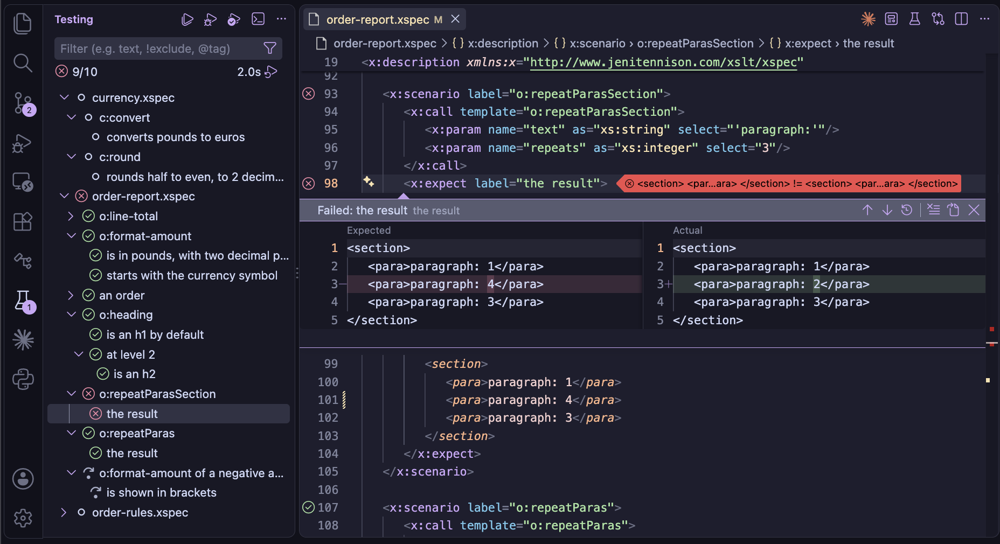

Testing XSLT with XSpec
A stylesheet that works on today's sample file may fail on tomorrow's. The way to find out is to test it: give a function, a template or a set of template rules an input, and say what the result should be. For XSLT - and for Schematron - the usual framework for this is XSpec.

What an XSpec test looks like
An XSpec file describes scenarios. Each scenario calls a function or a named template, or applies template rules to a context, and its expectations say what the result should be - written in XML, so the expected output can be a node tree as well as a value. Scenarios are named in plain language, so a test file also documents what a stylesheet is meant to do.
Running tests in the editor
With the XSLT/XPath extension, XSpec tests appear in Visual Studio Code's Test Explorer. Run all of them, one file, or one scenario; see the pass and fail status next to the tests and in the margin of the XSpec file; and when an expectation fails, see the expected and actual results side by side. XSpec itself is included with the extension, so there is nothing else to install.
Writing tests faster
With the cursor in a function, a named template or a template rule, a code action creates a scenario for it, with the parameters laid out to fill in. A new XSpec file can start with a pending scenario for each of a stylesheet's functions and templates. XSpec files are themselves checked as you edit them, against XSpec's schema and against the stylesheet they test.
Debugging a test and measuring coverage
A failing test can be debugged: set a breakpoint in the stylesheet or in the test, run the scenario, and step through the code it runs. Test coverage shows percentages for the code the tests exercised, and highlights covered and uncovered lines in the editor margin, so you can see what isn't tested yet.
The details are in the user guide: XSpec tests.
Common questions
How do you unit test XSLT?
Write an XSpec file: scenarios that call a function or template, or apply template rules to some input, each with expectations for the result. Run it from VS Code's Test Explorer or from the XSpec file.
What is XSpec?
XSpec is a testing framework for XSLT and Schematron, in the style of behavior-driven development. Tests are written as XML and describe a scenario and what is expected of it.
Can I see test coverage for XSLT?
Yes. After a test run, the extension shows coverage percentages and highlights covered lines in the editor margin.
Can I test Schematron too?
Yes. XSpec tests for Schematron run and debug in the same way. See Schematron in VS Code.
Get the extension. Install XSLT/XPath for Visual Studio Code from the Marketplace.